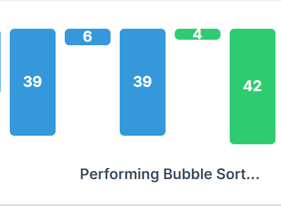
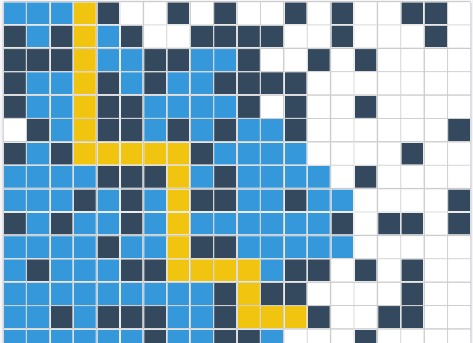

Visualize Algorithms Dynamically

Searching Visualizer
Uncover the inner workings of searching algorithms like Linear and Binary Search through immersive visual experiences.
Explore Search

Sorting Visualizer
Learn and compare various sorting techniques including Bubble Sort, Quick Sort, and Merge Sort with real-time animations.
Explore Sort

Pathfinding Visualizer
Master complex pathfinding strategies like Dijkstra's and A* algorithms through interactive grid-based visualizations.
Explore Path